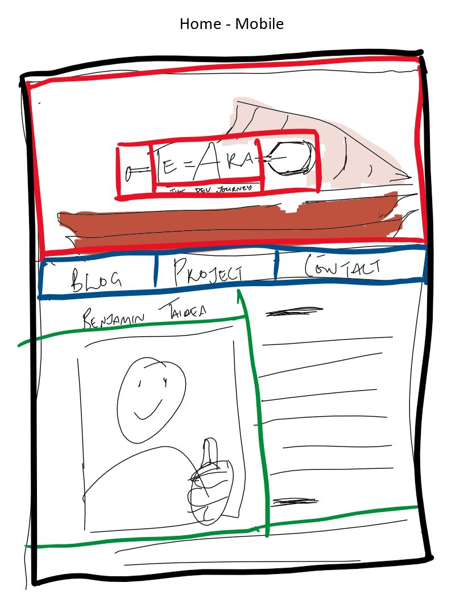

How did the 'process over product' concept affect the way you tackled the site redesign and rebuild?
I tried to allocate myself a set amount of time accomplish the redesign, but as this was my first time trying to really play with and comprehend alot of new concepts, I moved my focus away from the process and allowed myself to be lead by my curosity down the rabbit holes to really explore and test different things.
In short the concept probably didnt affect the way i tackled the rebuild but i did learn alot.
What did you think about meditation before reading chapter 2?
Being an open minded man of faith, I has always recongised the importance of meditation and learning to control the mind. Although it is something that o have practised rarely.
What new things have you learnt about meditation?
I really liked the analogy between mediation and working out. Being that meditation is something that you work and when you loose your focus and bring it back it likened to doing a dumbell-curl. I also really liked to insights into the many benefits of meditation, such as increasing hapiness (and having it as a default state), increase information processing (as pointed out in the attentional blink task) and what was really interesting was the positive effects it has on a phsyoligical level such as the immune system and the recovery of psoarisis.
Very interesting indeed!
I wonder if this means that practised monks have a decreased likelihood of cancer or illness or maybe an increased average lifespan??
Did any of the suggested meditation techniques stand out to you?
I liked the sectiom our posture and knowing that there isnt necessarily a correct position but to sit in a position that work for you. And i liked the analogy of the butterfly sitting on the leaf. I find this easy to visualise the movement of a leaf and butterfly going up and down with my breath. I also found it helpful to be non-judgement when you becoame distracted and that it is actually an opportunity to increase attention strength.
Any other musings?
Firstly, I think that it's brilliant to have this as part of an the cirrcumlum, not only for my personal growth, but also for others and the impact that it could create on the industry, I do wonder what impact it could have on a nation we if included EQ as part of the primary school cirrculum. I'm excited to continue reading this book and complete my first 100hrs of meditation which according to Meng is the reqiured amount before you can start to notice a measureable change.
Mobile Wireframes
Desktop Wireframes

The aspects of your wireframes I found difficult to implement, and why?
I had some trouble with the nav bar. I was hoping to put in a submenu but io had trouble getting it to align with my text-align:center in my nav and the submenu would pop-hover on the left so i just turned it off. This is a feature i will look at again later. I also want to make a sticky nav with scroll at some stage.
Other than that I changed a few design features as I put it together. Partly because i thought it looked better and partly because i dont have the design skills for what i was hoping to do in the header with and title on-top of an image on-top of another image. Also something i may look into again later.